Reprocess MRIs
This versatile toolbox is used to reprocess MRIs, usually full heads coming from the scanner, to make them fit for per-subject inverse matrices computation. User can rescale, reorient and convert original MRIs, and optionally extract the brain, compute the Grey Matter mask and port standard solution points.
Running from the Dialog
Technical points & hints
Anisotropic vs isotropic MRI
Downsampling MRI
Axis orientations
Searching the sagittal plane
Searching the MNI transverse plane
MNI and geometrical centers
Skull Stripping / Brain Extraction
Bias Field Correction (BFC)
Porting Solution Points
Results
Running from the Dialog
Called from the Tools | MRIs and Volumes | Reprocess MRIs menu, the following dialog appears:
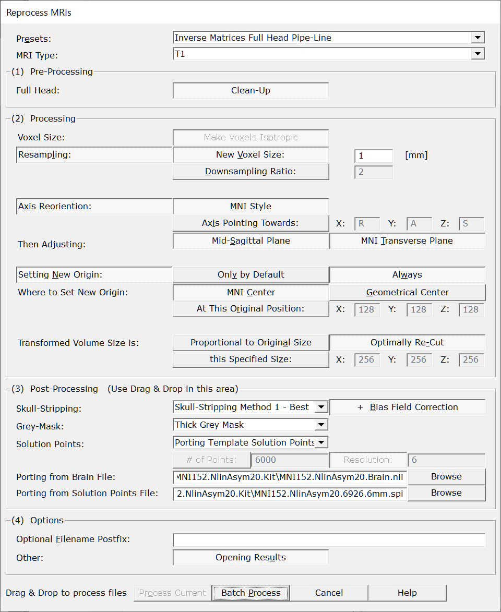
|
Presets: |
A few predefined scenarios you can then subsequently refine. |
|
MRI Type: |
The type of modality: either T1 or T1+Gadolinium. This can affect which method can be internally used f.ex. for the sagittal plane detection, or the skull stripping. |
|
(1) Pre-Processing |
|
|
Full Head Clean-Up |
Applies a big mask to clip out everything outside the main head, removing any "floating" artefacts like cables. |
|
(2) Processing |
|
|
Voxel Size: Make Voxels Isotropic |
Make the X, Y and Z voxel size equal, or isotropic, or cubic, or the same, or.. you get the idea. Anisotropic voxels are hard to process with filters, so this step is mandatory. |
|
Change the voxels' resolution, usually through downsampling. The aim is to have either better units, or comparable files, or smaller files. There are currently 2 ways to change resolution: |
|
|
New Voxel Size: |
When selected, give the new (isotropic) voxel size in the next edit field. Default is set to 1 [mm]. Cartool is able to upsample the input MRI, though it will not visually improve it. |
|
Downsampling Ratio: |
The other option is to just apply a downsampling factor. The scaling factor needs not be an integer value, so f.ex. you can rescale by 2.56 if it suits you. It could also possibly be less than one, which would then leads to upsampling the input file. F.ex. a scaling factor of 0.5 would mean doubling the original resolution. |
|
Change "how the axis are organized", for the sake of consistency. |
|
|
MNI Style |
Data is reordered so as to have:
Hence refering to the MNI orientation as RAS, Right-Anterior-Superior for the three X, Y, Z axis. |
|
Axis Pointing Towards: |
You can specify any other orientation you like, by specifying which direction each of the 3 axis are pointing to. Each axis edit field can contain only a single letter among:
Note that the resulting orientation should be a valid right-hand axis system , like f.ex. PIR, ALS or LIP. Cartool will enforce this consistency , and will not be enable to proceed if the target orientation is invalid. |
|
Then Adjusting: |
After the main axis have been reassigned, some fine-tuning can be done . |
|
This option will search for the optimal mid-sagittal cutting plane , the one plane that anatomically separate the two hemispheres. This adjustment is of utmost importance for proper Inverse Solutions, as to ensure that an (approximately) equal number of solution points will be assigned to each hemisphere. This option is usually set only for subjects' MRIs, but is not mandatory for template MRIs. |
|
|
This option will adjust the transverse cutting plane to resemble as much as possible the MNI one. Subjects can be positionned very differently in the MRI scanner, for various reason. Thererfor, without realigning the transverse plane, it can be difficult to interpret activations when looking at slices alone. Aligning the brains to the MNI space makes the brains easier to read, so to speak. This step could be compared to a rigid body coregistration to the MNI mid-sagittal plane, while still keeping the original size (no deformation). |
|
|
Setting New Origin: |
It is often a good idea to set the origin, or "center", of the MRI. This will help for any forthcoming coregistration f.ex. |
|
Only by Default |
This option will prevent overwriting any existing origin, which will therefor be preserved through the transformation process. |
|
Always |
This option, on the other hand, will forcibly set the origin, even if a previous origin exists. |
|
Where to Set New Origin: |
|
|
A very convenient center is to use the MNI origin. The resulting origin will be very close, although with some slight variation, to the Anterior Commissure chosen in the MNI template. This option is available only when the MNI Transverse plane option has also been set (see above). |
|
|
Another convernient center is to use the geometrical center from the brain . This one option gives a more central point than the MNI Center above, the latter being more anterior. |
|
|
At this Original Position: |
Last option is for the user to give some explicit coordinates, from the original voxel space (not the target space). |
|
Transformed Volume Size is: |
You can have some controls on the final volume size, which can come in handy in some cases. |
|
Proportional to Original Size |
The output size will follow the transform you applied on the data:
|
|
Optimally Re-Cut |
The output volume will be cropped to the closest as possible to the output content . This option can dramatically (yes, drama) reduce the actual size of big volumes with lot of empty spaces. This option is mostly used in conjunction with the Sagittal and Transverse planes search. These will rotate the MRI, and trying to encompass the edges of the new volume will result in very big, and nearly empty, files.
Important: this option works on a file-by-file basis , each file will be evaluated and cropped differently according to their contents! If you happen to process a full head then the corresponding brain, each file will be cropped differently. Cartool can still work with these 2 files, but most of other packages will not. |
|
this Specified Size: |
You want some specific size? Here is your chance, provide the X, Y, Z sizes of the output volumes . If you provide a smaller size than the output content, some clipping will occur. Cartool tries to behave nicely, though, by centering the data first, then clipping the edges only, so you might still be OK with the results. If you provide a bigger size than the output content, some empty padding will be added equally on all sides. |
|
(3) Post-Processing |
These options are relevant while reprocessing full head MRIs only. |
|
Extract the full brain from the head, and save it to another file. There are currently 3 methods available, ranked by their reliability. If one method fails, just try the next one, there should be at least one that gives an acceptable results! |
|
|
It is usually a very good idea to also correct for the Bias Field of the extracted brain. Note that the Bias Field Correction does not apply to the full head MRI. |
|
|
Grey Mask: |
If the brain has been extracted, you can opt to compute a grey mask. There are currently 4 levels of "thicknesses" available:
|
|
Solution Points: |
If the grey mask has been computed, you can also compute the solution space for the inverse matrices. There are currently 2 options available:
|
|
Computing Solution Points: |
(first option) Pick this option if you want to optimally compute the solution points for each subjects. But be warned that there is no way to enforce any sort of compatibility between the various subjects' solution spaces. |
|
# of Points: |
Either you set the number of points you wish (results can differ slightly).. |
|
Resolution: |
..or the resolution, in [mm], between the points. |
|
(second option) This option allows a pool of subjects to share a compatible solution space, i.e. with the same amount of points, and the same distribution. Use this option if you plan to run any sorts of statistics in the inverse space. |
|
|
Provide a template brain which will be automatically coregistered onto the current subject's brain. |
|
|
Provide the solution space that correspond to the template brain above. Once the coregistration has been done, these points will be ported back to the subjects' space. |
|
|
(4) Options |
|
|
Optional Filename Postfix: |
You can give a meaningful file name postfix for all the resulting files. If empty, Cartool will generate a postfix based on all the preprocessing steps applied. |
|
Opening Results |
What is says. However, this could be reset for big batches of files. |
|
Process Current |
Enabled when called from a MRI window, the preprocessing will apply only to this file. |
|
Batch Process |
Enabled when not called from a MRI window :
|
|
Cancel |
Quit the dialog. |
|
Help |
Launch the Help to the right page (should be here...). |
MRIs Preprocessing - Technical points & hints
This is what an anisotropic MRI looks like, with voxels of unequal dimensions:
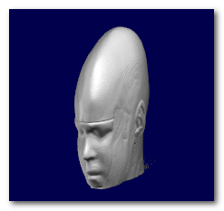
This is mainly a side-effect of how the MRI scanner performed the acquisition. Unfortunately, filters designed for MRIs are usually expecting isotropic voxels as a way to decrease their implementation's complexity. This is the main reason why we need to correct for anisotropy.
Here is the isotropic corrected version of the MRI
above, with voxels of equal dimensions:
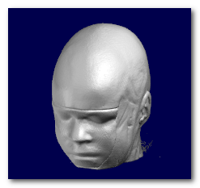
This is an example before and after downsampling, showing the loss of resolution of the downsampled version:
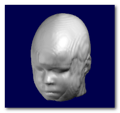
A convenient voxels' resolution is usually 1 [mm], but
donw to 2 [mm] is
totally acceptable for inverse solution matrices, in case you encounter
memory problems or want to speed up things.
Note that Cartool currently allows you to specify any voxel size, or any
downsampling / upsampling values. Just put meaningful values as input
parameters! Avoiding final MRI size bigger than about 256 voxels is kind of
recommanded.
According to how the data was scanned, or from which package you took the
data from, you might encounter orientation problems either at the display
level or within your processing pipe-line. This is the main reason why you
might need to reorient your MRIs.
Before proceeding, this is a reminder of how Cartool encodes orientation with a 3 letter string :
- Orientation is coded with a sequence 3 letters, like RAS or PIR
-
A letter can only be either L, R, A, P, I or S, each
standing for:
- Left vs Right
- Anterior vs Posterior
- Inferior vs Superior.
- First letter tells in which direction the X axis is pointing to
- Second letter for the Y axis
- Thirs letter for the Z axis
So, f.ex., RAS means X axis is pointing toward the Right, Y axis
pointing toward the Anterior part, and the Z axis pointing toward the
Superior part
Now let's have a look at the same data, shown with 3 different orientations, respectively PSL, PIR and ALS (you can tell by looking at the orientation and axis names at the edge):
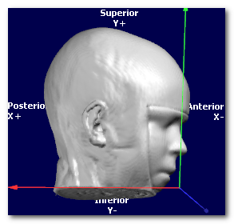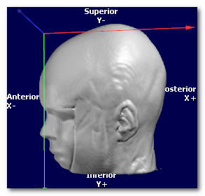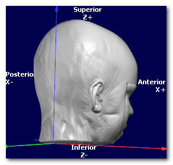
In all cases, the targeted orientation has to be geometrically correct,
and be a
right-hand axis system
:
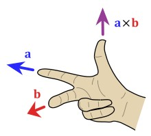
(picture courtesy of Wikipedia, User:Acdx )
In the examples above, the 3 orientations PSL, PIR and ALS are all indeed right-hand systems:
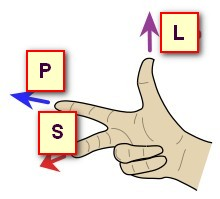 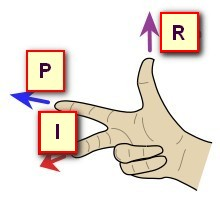 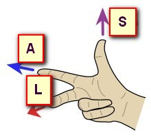
Cartool is checking for you that the orientation you provide is legal. If the dialog is not able to proceed, this could be because the target orientation you gave might be wrong. Try to either disable the whole Axis Reorientation option, or try a legal orientation like RAS, to see if this was the culprit. If yes, check again your orientation flags...
Some MRI data might have the head incorrectly aligned to the sagittal plane , due to clinical constraints f.ex. Even not visible, this sagittal plane might still be slightly off. If we want to compute the Inverse Matrices for these subjects, there will be a problem with distributing solution points evenly on each hemispheres .
Hence the need to adjust to an optimally cutting sagittal plane.
Here we can see an example of before and after the sagittal plane (shown
as a transparent blue plane) has been adjusted:
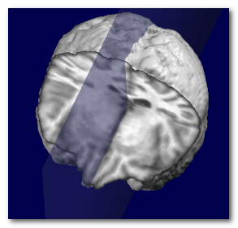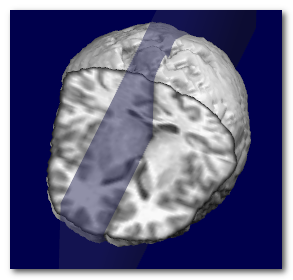
Technically speaking, the search for the optimal plane is done by
maximizing the symmetry around a narrow plane, by adjusting 2 angles (roll
and pan) and 1 translation (left-right).
Searching the MNI transverse plane
For the same reasons as for the sagittal plane, head placement in the scanner could be such that the transverse slices might be difficult to interpret. The proposed remedy here is to adjust the orientation until it looks similar to the MNI transverse plane, which is itself referring to the Talairach space.
Please note that the transverse plane can not be searched unless the sagittal plan e has been done before .
Here we can see an example of before (left) and after (middle) the
transverse plane (shown as a transparent blue plane) has been adjusted, and
the MNI Brain (right) for the sake of comparison:
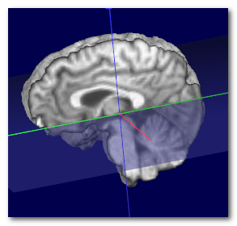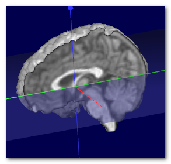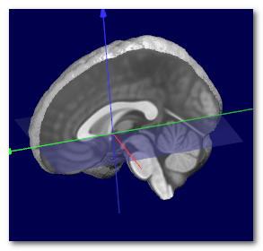
Technically speaking, the search for the optimal plane is done by
coregistering the sagittal plane to the MNI space, by adjusting 1 angle
(tilt) and 2 translations (up-down and front-back), while ignoring scaling.
There is no rescaling done in the final transform, so the Sagittal + Transverse planes are finally equivalent to a 6-degrees transform (3 translations + 3 rotations). It could be very helpful to have all brains of a pool of subjects preprocessed this way, as only some scaling (and optionally some shearing) would be necessary to compute a mean template out of them.
When the MNI transverse plane has been found, we can at the same time recover the MNI center, which is just above the Anterior Commissure (AC). Otherwise, it is a good idea to use the geometrical center of the brain .
Here we can see the obtained MNI center (left), compared to the actual MNI brain (middle), and the geometrical center of the same brain (right):
 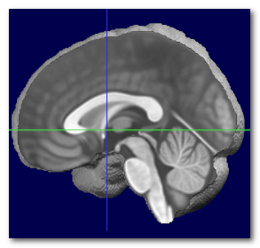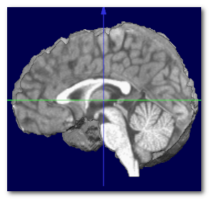
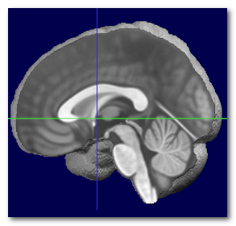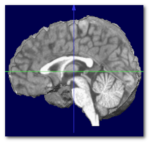
Again, the MNI center can not be obtained without
searching
beforehand for
the sagittal plane
and
the MNI transverse plane.
Skull Stripping / Brain Extraction
Skull stripping is the process of extracting the whole brain (grey + white matter, CSF, cerebellum etc...) out of a full head. Cartool needs this whole brain to be able to extract a grey mask during the Inverse Matrices creation.
Here you can see the extracted brain (colored), superimposed on top of the full head it was extracted from:
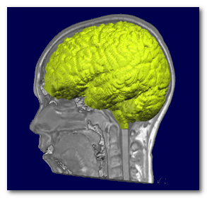
There are currently (2025) 3 Skull Stripping methods available to the user. Use them in this order if you ever encounter any erroneous results:
- Method 1, the default, gives the most reliable results, but takes longer to run. It is based on a region growing method and lots of post-processing.
- Method 2 is the second best, and might run a little faster. It is also based on a region growing method, but with different tweaks.
- Method 3 is still a work in progress, so it currently gives OK-ish results, but, in some cases, it might save the day! It is a totally differnt approach with brute force use of masks.
MRI scans usually have inhomogeneities in the space domain, called Bias Field . Without correcting for it, a given brain tissue like the grey matter will have different values according to their physical position in the scanner. This is definitely a non-desired property which will hamper the segmentation of the brain into its constituent tissues.
To counter-balance for this inhomogeneity, a process Bias Field Correction (BFC) is usually applied on the extracted brain.
Here you can see the extracted brain before the BFC (left), where the central part of the brain appears "brighter". Then the same brain with BFC (right), giving a uniform range of values for each tissues:
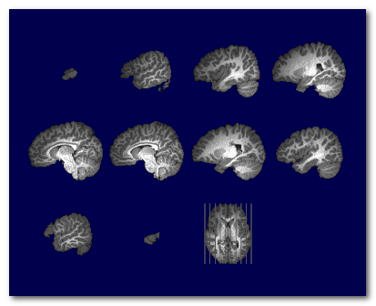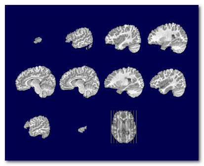
Note that the BFC correction is best applied on an already extracted brain. It could still be computed and applied on a full head, but with various success. It is however not mandatory to have the full head BFC, because the algorithm for the skull-stripping is actually insensitive to the Bias Field (yes, take that).
Porting Template Solution Points
Porting a template solution space aims at having the same standardized set of solution points across a whole pool of subjects. It can be seen as creating an isomorphic solution space, so to speak. This will allow to compute statistics across subjects and conditions in the inverse space, which will not be possible otherwise.
The steps are the following:
- Coregister the template brain to the subject's brain, using an elastic affine transformation (15 parameters)
- Apply the transform matrix on the template solution points
Here is an example. On the left is the subject's brain, and on the right the MNI 2020 Template Brain from which we wish to port the solution points from:
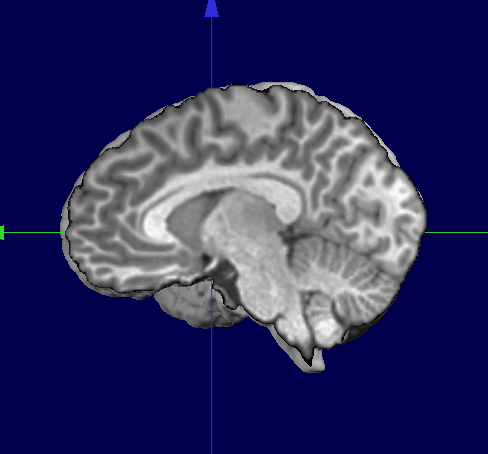
Here we see the MNI Template Brain once coregistered on the subject's brain, superimposed on the subjects' brain, shown in yellow:
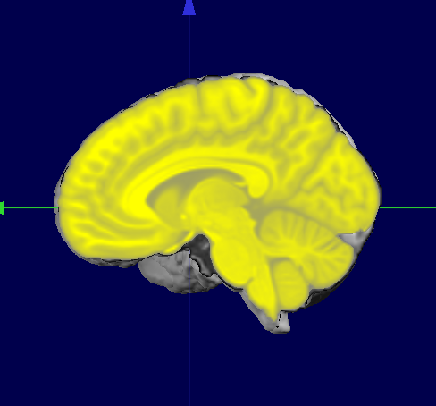
If we now superimpose the original MNI Template Solution Points (right) and the ported points (left), we can see they both match their "own" brain:
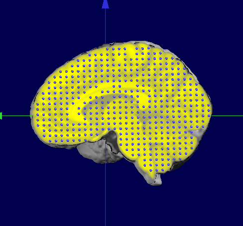 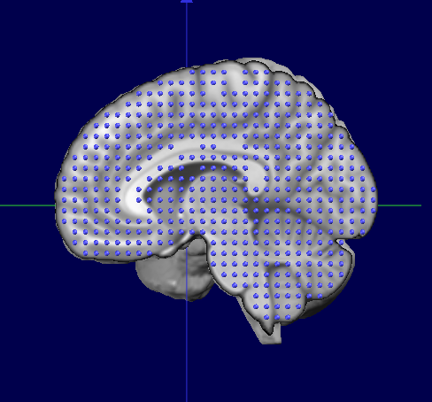
Finally, this is the results we wanted, the subject's brain with a standardized solution space:
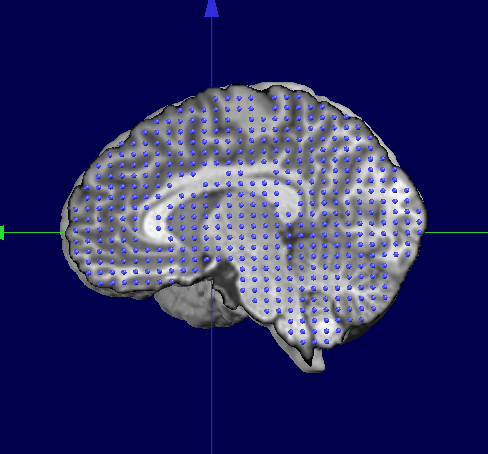
Notes
- The affine coregistration by definition does not include any local, non-linear transformations. The purpose here is to use the global shape of the brain for the coregistration. Also see the next point below.
- Because we use an affine transformation, any solution points structured as a grid will also be transformed into a grid. This point is very important to compute some inverse matrices like LORETA or LAURA, as they make use of neighborhood information!
MRIs Preprocessing - Results
-
Preprocessed files are written in the same directories as their sources.
File type is always Nifti 2. -
Main file is saved as:
-
<input file>.<postfix>.Head.nii for the head
-
-
You can have these optionally:
-
<input file>.<postfix>.Brain.nii for the brain
-
<input file>.<postfix>.Grey.nii for the grey mask
-
<input file>.<postfix>.spi for the solution points
-
-
Verbose file .vrb (text), showing all the parameters.